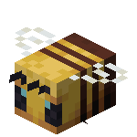
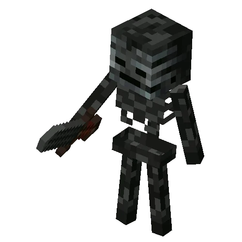

Criaturas passivas
As criaturas passivas são criaturas inofensivas e pacíficas que não atacam o jogador, mesmo quando provocados, e geralmente fogem se forem provocados.
Aldeão
Os aldeões são criaturas passivas que habitam vilas, trabalham, procriam e interagem. Suas roupas variam de acordo com sua profissão e bioma. Um jogador pode negociar com aldeões, usando esmeraldas como moeda de comercialização.
Allay
O allay ou assistente é uma criatura pacífica que voa e é semelhante ao vex. Ele coleta e entrega itens para jogadores que lhe derem algo.
Axolote
Um axolote é uma criatura pacífica aquática que pode ajudar o jogador nos embates submersos, já que ele ataca outras criaturas aquáticas.
Bacalhau
Esse artigo fala sobre bacalhau na sua forma de criatura. Para as formas de item, veja bacalhau cru e bacalhau assado. Bacalhau é uma criatura comum passiva encontrada nos oceanos.
Baiacu
Esse artigo fala sobre o baiacu na forma de criatura. Para o item de alimento, veja Baiacu. Para outros usos, veja Peixe. Baiacu ou peixe-balão. são criaturas defensivas incomuns encontradas em oceanos.
Burro
Os burros são variantes dos cavalos que, quando domesticados, podem ser montados e equipados com baús.
Cavalo
Cavalos são mobs domesticáveis que têm cinco variações no jogo: cavalos, burros, mulas, cavalos zumbis.
Cavalo-esqueleto
Um cavalo-esqueleto é uma variante morta-viva do cavalo. Ele tem chance de ser gerado durante a queda de um relâmpago.
Coelho
Coelhos são criaturas raras passivas. Eles são a fonte do pé de coelho e da pele de coelho, assim como a carne de coelho crua.

Mooshroom
As mooshrooms ou coguvacas são variantes cobertas de cogumelo das vacas, exclusivas do bioma raro de campo de cogumelos.

Galinha
Galinhas são criaturas passivas comuns encontradas em biomas de grama.
Gato
Os gatos são criaturas passivas domesticáveis encontradas nas vilas e cabanas do pântano.
Boneco de neve
O boneco de neve é a primeira criatura utilizável ou construída manualmente por um jogador que foi adicionada ao jogo e é construída com dois blocos de neve e uma abóbora empilhados. Os golems de neve são, por natureza, amigáveis aos jogadores. Eles arremessam bolas de neve nas criaturas inimigas e deixam um rastro de camadas de neve sobre o chão na maioria dos biomas do Minecraft.
Jaguatirica
Uma Jaguatirica ou Ocelote é uma criatura passiva.
Lavagante
Lavagantes são criaturas passivas encontradas no Nether. Eles podem ser utilizados para caminhar sobre a lava.

Lula
Lulas são criaturas pacíficas que geram na água. Quando morta, cada lula vai dropar 0 3 sacos de tinta que pode ser usado como corante preto para lãs, coleiras de lobos, vidros coloridos, etc.

Lula-brilhante
A lula-brilhante é uma variante da lula com uma textura azulada brilhante.

Mula
Mulas são descendentes inférteis de cavalos e burros que, quando domesticadas, podem ser montadas e equipadas com baús.
Morcego
Morcegos são Mob passivos voadores que aparecem em cavernas.

Ovelha
As ovelhas são criaturas passivas comuns que fornecem lã e carneiro e são encontradas em vários biomas gramados.
Papagaio
Papagaios são criaturas domesticáveis capazes de voar encontradas no bioma de selva.
Peixe tropical
Peixe tropical é uma criatura passiva encontrada em oceanos. Há 3.584 variantes possíveis.
Porco
Um porco é uma criatura passiva comum encontrada em biomas gramados. Os porcos soltam costeleta de porco crua quando mortos e podem ser equipados com uma sela e montados.
Raposa
Raposas são criaturas passivas noturnas cuja geração encontra-se em biomas de taiga, taiga com árvores gigantes e taiga nevada. Elas são reproduzidas com bagas doces ou bagas brilhantes e se locomovem para as vilas durante a noite. Após a reprodução, o filhote será domesticado.
Salmão
Salmão é uma criatura comum passiva encontrada em oceanos e rios.

Sapo
Um sapo ou rã é uma criatura pacífica que pode gerar nos pântanos.

Tartaruga
Tartarugas ou tartarugas marinhas são criaturas passivas que se movem tanto na terra quanto na água.
Vaca
Uma vaca é uma criatura passiva comum, fonte de couro, bife cru e leite. As vacas são encontradas em biomas gramados.
Comerciante nômade
Vendedor ambulante ou Comerciante nômade é uma criatura passiva encontrada aleatoriamente cruzando o mundo. Ele é capaz de realizar trocas, com itens naturais mais vantajosos e, em alguns casos, menos perigosos de se obter.
Criaturas neutras
As criaturas neutras às vezes são passivas e às vezes hostis ao jogador. Muitas criaturas neutras se tornam hostis apenas quando atacados primeiro, mas outras criaturas neutras têm outras maneiras de serem provocadas.
Abelha
Abelhas são criaturas neutras que moram em enxames e, se forem provocadas, picarão o jogador e lhe darão veneno.
Aranha
Aranhas são criaturas neutras comuns que têm a capacidade única de escalar paredes.
Aranha das cavernas
Aranhas das cavernas são uma variação pequena e venenosa da Aranha que vive em minas abandonadas.
Cabra
As cabras são criaturas neutras encontradas no bioma de montanhas as quais podem saltar bem alto e são uma fonte de leite e chifres de cabra.
Enderman
Um Enderman é uma criatura neutra encontrada em todas as três dimensões. Endermans podem teletransportar e pegar blocos.
Golem de ferro
Um golem de ferro é uma criatura neutra utilitária grande e forte que defende jogadores e aldeões.
Golfinho
Golfinhos são criaturas neutras que vivem em oceanos não congelados.

Lhama
Lhamas são criaturas neutras que podem ser domesticadas e usadas para transportar grandes remessas de itens.
Lobo
Os lobos são criaturas neutras as quais podem se aliar aos jogadores. Podem ser domesticados quando o jogador os alimenta com ossos.
Panda
Pandas são raras criaturas neutras que vivem em selvas. Certos aspectos da aparência e do comportamento de um panda irá depender da sua personalidade.
Piglin
Piglins são criaturas hostis que geram no Nether. Eles se tornam criaturas neutras se o jogador utilizar uma peça de uma armadura de ouro. Eles estão equipados com bestas ou espadas de ouro. Jogadores pode trocar com os piglins usando a barra de ouro para receber vários itens.
Piglin-zumbi
Piglin-zumbi é uma criatura neutra comum, que vive no Nether.
Urso polar
Os ursos polares são criaturas neutras que vivem em alguns biomas gélidos.
Criaturas chefes Final
Chefes são criaturas hostis especiais que são mais perigosos e mais resistentes do que outras criaturas. Eles não surgem aleatoriamente e são intencionalmente invocados. Eles também têm uma barra de chefe que mostra seu nome e vida. Chefes oferecem desafios únicos, mas também recompensas equivalentes.
Dragão Ender
O Dragão Ender é um boss no Minecraft que aparece no End.

Wither
O Wither é um chefe morto-vivo altamente destrutivo, construído pelo jogador, que pode flutuar no ar e disparar rajadas de crânios de Wither explosivos em quase todos os seres vivos.
Criaturas agressivas
Criaturas hostis são perigosos e agressivos que sempre atacam o jogador dentro de seus respectivos alcances de detecção.
Afogado
Afogados são uma variante de zumbis, aquáticos e comuns, gerados em corpos d'água ou quando um zumbi se afoga. Eles também são a única fonte de tridentes.
Blaze
Blazes ou Chamas são criaturas hostis voadoras encontradas em fortalezas do Nether. São a única fonte de varas de blaze.
Breeze
o Breeze ou Vórtice é uma criatura hostil gerada por alguns geradores do desafio nas câmaras do desafio. Ele se movimenta através de saltos por grandes distâncias e ataca disparando projéteis de vento, que causam uma forte repulsão e interagem com botões, alavancas, portas que não sejam de ferro e bloco semelhantes em uma área. Além disso, os vórtices podem repelir todos os projéteis, incluindo flechas e tridentes lançados, não sofrendo nenhum dano deles.
Bruxa
As bruxas são criaturas hostis incomuns as quais usam poções arremessáveis como arma de longa distância e poções benéficas em si mesmas defensivamente. Ainda que sejam perigosas, podem fornecer importantes ingredientes para a criação de poções.
Creeper
Creepers são mobs hostis que aparecem em locais escuros, mas ainda podem sobreviver à luz do sol. Que se aproximam silenciosamente de jogadores e explodem logo depois de chegar a 3 blocos de seus alvos.

Cubo de magma
Um cubo de magma é uma criatura hostil com a aparência vermelha e negra e com olhos vermelhos, laranjas e amarelos encontrado raramente pelas ruínas do Nether e comumente pelas fortalezas e deltas de basalto. Este possui um comportamento semelhante ao de um slime.

Defensor
Um defensor é uma criatura hostil invocada pelos emissores de sculk nas profundezas sombrias. Os defensores são totalmente cegos, usando apenas seu olfato e audição para rastrear o movimento das entidades. Os defensores atualmente são as criaturas que causam mais dano não-explosivo em todo o Minecraft.
Devastador
Devastadores são grandes criaturas hostis que aparecem em invasões Illager.
Endermite
Um endermite é a menor criatura hostil. Os endermites raramente geram quando um jogador se teletransporta com o uso de uma pérola do ender. Os enderman são hostis aos endermites.
Esqueleto
Esqueleto são criaturas hostis equipadas com arcos. Que aparece só em lugar escuros.
Esqueleto wither
Esqueletos wither são variantes do esqueleto que são geradas no Nether.
Ghast
Ghasts são uma espécie de criatura similar a uma água-viva muito grande, que flutua pelo ar e atira bolas de fogo de suas bocas.
Guardião
O Guardião é um mob hostil que se assemelha a um baiacu irritado que só gera debaixo d'água, em Monumentos do Oceano. Seu olho vai sempre olhar para o ponto de vista de um jogador nas proximidades.
Guardião-mestre
O Guardião-mestre uma variante mais forte e maior do guardião, e pode infligir exaustão. É a maior criatura aquática no Minecraft, assim como o mais forte.
Hoglin
Hoglins são criaturas hostis que podem ser procriadas (veja reprodução) e são a principal fonte de alimento no Nether.

Invocador
Invocador é uma criatura hostil. Ele é um dos vários tipos de Illager, que são aldeões abandonados - junto com o vingador, ilusionista e o saqueador.
Pantanoso
Um pantanos o ou bogged é uma variante de esqueleto coberta por musgo e cogumelosque é gerada em pântanos e manguezais. Os pantanosos se comportam da mesma forma que esqueletos, mas atacam mais lentamente e disparam flechas com efeito de veneno.

Phantom
Phantoms são criaturas hostis comuns voadoras que atacam jogadores os quais não dormiram por mais de três dias no jogo. Sua aparência e sons esquisitos de mortos-vivos são suas principais descrições.
Saqueador
Saqueadores são illagers equipados com bestas e encontrados regularmente em invasões, patrulhas e postos de observação.
Shulker
Shulkers são criaturas hostis encontrados nas cidades do end. Eles se escondem em sua casca para se camuflar com os blocos de púrpura ao redor e proteger os tesouros da cidade.
Slime
Os Slimes são criaturas hostis em forma de um cubo saltitante que geram no pântano e, ocasionalmente, no subsolo.
Traça
A Traça é um pequeno mob hostil que pode se esconder em diversos blocos rochosos.
Errante
Um errante é uma variante de esqueleto que é gerada apenas em biomas cobertos de neve. Eles se comportam como esqueletos comuns, mas disparam flechas com efeito de Lentidão com seus arcos.
Vex
O vex é uma pequena criatura hostil voadora. Ele segura uma espada de ferro, pode atravessar paredes e apenas é invocado como um dos ataques do invocador.
Vingador
Vingador são criaturas hostis. Eles são um dos vários tipos de illagers, que são moradores locais - os outros três são os Ilusionista, Saqueador e o Invocador.
Zoglin
Zoglins são criaturas hostis criadas quando um hoglin é trazido para a superfície. Eles atacam a maioria dos tipos de criaturas à vista.
Zumbi
O zumbi é a criatura hostil mais comum do jogo.
Zumbi-múmia
Um zumbi-múmia é uma variante do zumbi que aparece em desertos. Diferente dos zumbis, zumbi-múmias não queimam na luz do sol.